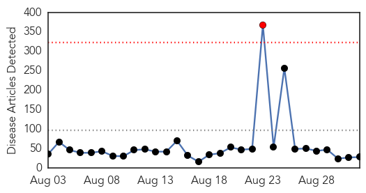
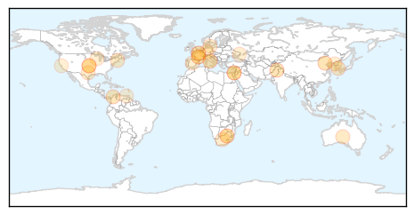

Unknown
30-Day Web Trend
1 alerts, 0 warnings

30-Day Twitter Trend
Article Locations

Article Confidences

Top Articles:
- 0.866
- News, Information and Connections for Action
- 0.866
- Lesbian couple allowed to adopt child in Italy’s first such ruling -report
- 0.866
- Pakistan's national channel taken off air after protesters storm building
- 0.866
- Hong Kong police use pepper spray to disperse pro-democracy activists
- 0.786
- Hundreds of Colombian girls hospitalized after vaccinations
- 0.772
- ‘Urgent need’ to control rabies-spreading vampire bats
- 0.746
- On 3rd day, water contamination toll touches 200, 70-year-old dead
- 0.698
- Asia and the Pacific: Weekly Regional Humanitarian Snapshot (26 August - 1 September 2014) - Bangladesh
- 0.677
- New Advice for Vaccines to Stave Off Pneumonia
- 0.675
- Bat Lyssavirus Could Pose Threat to Humans, Animals
- 0.673
- When something medically goes wrong
- 0.630
- Cancer drive at schools - Gauteng
- 0.627
- Cyclospora illness count passes 300
- 0.602
- White People of South Africa Are the Reason for the AU Failure?
- 0.584
- Gonorrhoea on the rise in Denmark
- 0.547
- Obama calls for higher wages amid 'revving' US economy
- 0.547
- Americans detained in North Korea call for US help
- 0.547
- Video: Ukraine’s children return to school as fighting rages on
- 0.547
- Ukrainian forces retreat from Luhansk airport after clashes
- 0.547
- Spain orders custody for parents of ill British boy
- 0.547
- Rescue efforts under way after French apartment block blast
- 0.547
- Lesotho PM calls for regional peacekeeping force after ‘coup’
- 0.547
- French education ministry picture sparks racist abuse
- 0.547
- Death toll rises in Paris apartment building blast
- 0.521
- AIDS cure may come, but can we afford the cost?
- 0.507
- Humanitarian Implementation Plan (HIP) Palestine (ECHO/PSE/BUD/2014/91000) Last update: 30/07/2014 Version 3 - occupied Palestinian territory
- 0.506
- Over 200 Patients Benefit from Amref Health Africa Outreach - South Sudan
- 0.506
- Is Venezuelan Film ‘The Liberator’ a Historical Biopic or Propaganda Blockbuster? · Global Voices
Top Tweets:
-
No tweets found for Sep 01, 2014
Dengue Fever
30-Day Web Trend
0 alerts, 0 warnings

30-Day Twitter Trend
3 alerts, 0 warnings

Article Locations


Article Confidences

Top Articles:
- 1.000
- 19 new cases of dengue fever reported
- 0.998
- Will global warming make Japan more vulnerable to tropical diseases? ‹ Japan Today
- 0.995
- Japan Finds 19 More Dengue Fever Cases, Public Broadcaster Says
- 0.992
- 'Dengue a 'multi-organ' threat'
- 0.990
- Japan Confirms 22 People Affected By Dengue Fever Outbreak
- 0.958
- Japan confirms more dengue infections officials
- 0.847
- Panic in Village Over Fever, 18 Land in Hosp
- 0.667
- Genetically modified Aedes on a mission - Health
- 0.532
- Lecture on dengue
Top Tweets:
-
No tweets found for Sep 01, 2014